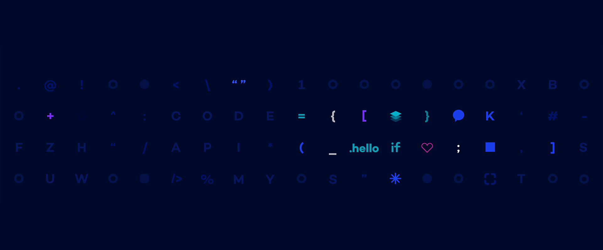
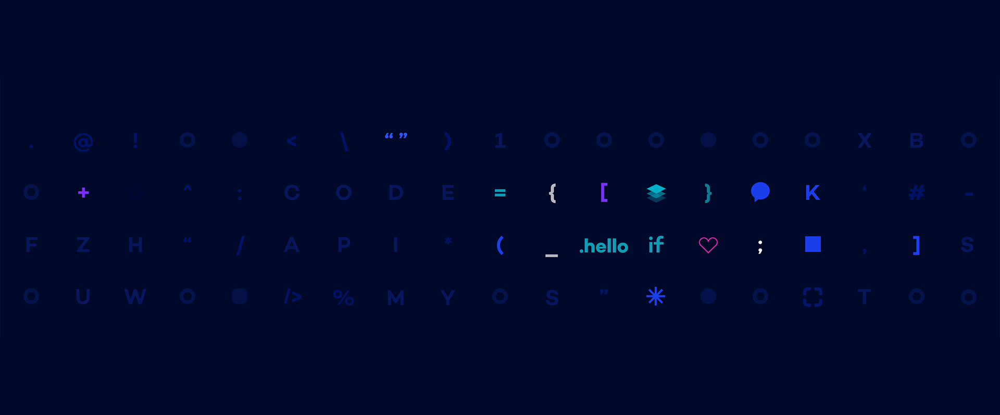

TOP
TOP
금융과 혁신이 함께 성장하는 미래,
삼성금융 오픈 컬래버레이션을 통해 스타트업과 상생의 미래를 만들어 갑니다.
보험사 자산운용 관점에서 금융시장 환경을 고려해 최적의 자산 포트폴리오를 제안하고 투자 영역별(채권/주식 등) 펀드 비교/추천
위험률 계산을 위한 클레임 데이터 유형 분석 및 스마트팩토리 고장 및 가동 정지 리스크 분석 지원
삼성카드 앱 內 O2O 주문하기/매장방문 예약하기 기능 탑재 및 삼성카드 쇼핑 앱 內 정기구독 신청하기 기능 탑재
비상장 및 해외주식 포함 정보 제공 및 시장변화 연계된 상품 자문, MZ세대 대상 컨텐츠 및 서비스 제공
삼성금융과 스타트업이 협업하여 다양한 도전과제를 해결합니다.
아래 도전과제 중 귀사의 아이디어와 기술을 통해 새로운 사업모델과 솔루션을 만들 수 있는 과제를 선택하여 지원해 주세요.
삼성금융과 스타트업이 협업하여 다양한 도전과제를 해결합니다.
아래 도전과제 중 귀사의 아이디어와 기술을 통해 새로운 사업모델과 솔루션을 만들 수 있는 과제를 선택하여 지원해 주세요.
아이디어와 기술을 통해 새로운 사업모델과 솔루션을 만들 수 있는 과제를 선택하여 지원해 주세요.
자신의 아이디어와 기술을 활용하여 새로운 솔루션과 사업모델을 제안 협업할 기회를 제공할 스타트업 업체 선정
1삼성금융과 협업할 기회를 제공 스타트업이 보유한 기술을 활용하여 사업화 가능한 영역 발굴 삼성 금융사의 인프라를 활용하여 솔루션 공동개발
2본선진출 기업에 3,000만원 지원최종선정 기업에 1,000만원 추가 지원
3정기적인 미팅을 통해 삼성금융의 노하우 공유 협업기간에 참여하여 스타트업의 제안을 구체화
4솔루션에 대한 사업화와 전략펀드를 통한 투자 검토
5※ 본선진출 및 최종선정 기업은 금융사별 자체 선정
※ 선정 기업 수는 심사과정에서 변경될 수 있음